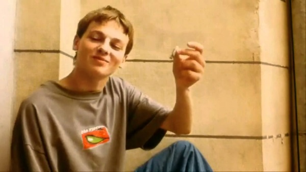

"Chłopaki nie płaczą" jest komedią gangsterską, której fabuła osadzona jest w polsce końca lat 90. Bohaterem jest Kuba, student akademii muzycznej, który przypadkowo wplątuje się w porachunki gangsterskie.
Fabuła filmu nie jest bardzo oryginalna, ale całkiem ciekawa i zabawna. Wraz z początkiem filmu, poznajemy kolejne postacie i wątki, które w miarę postępu akcji zazębiają się ze sobą.
Na początku filmu, Kuba próbuje pomóc swojemu koledze Oskarowi z pewnym problemem i do tego celu zamawiają dziewczyny do towarzystwa. Jednak jak się później okazuje nie mają wystarczająco pieniędzy aby zapłacić za usługę
. Czesiek Alf
, opiekun dziewczyn, bierze w zastaw bezcenną figurę, Afrykańskiego Czarownika
z kolekcji wujka Oskara. Kuba postanawia go oddzyskać.
W późniejszych scenach poznajemy Bolca, syna gangstera, który chciałby wieść spokojne życie prowadząc agencję, fitness i wypożyczalnie video, ale jego ojciec ma dla niego inne plany. Musi przyjąć i ugościć parę gangsterów z wybrzeża: Freda i Gruchę, którzy przyjechali do stolicy robić interesy z Szefem. Niefortunnie w rozrachunki między gangsterami wmiesza się Kuba...
Jak przystało na film gangsterski mamy tutaj strzelaniny, pościgi, pieniądze, narkotyki, porwania.
W filmie są ukryte aluzje to różnych sytuacji, aktorów i innych filmów. Np. Rozmowy działaczy PZPNu o sytuacji polskiej piłki nożnej, czy powoływanie się na znajomość z Piaskiem, aby dostać się na koncert w akademii muzycznej.
Coco jamboo i do przodu!
Najmocniejszą stroną tego filmu są, kultowe już, dialogi i monologi. Czasami są one kabaretowe, absurdalne, ale zarazem życiowe i prawdziwe.
Dawno temu ja też zaufałem pewnej kobiecie, wtedy dałbym sobie za nią rękę uciąć. I wiesz, co... I bym teraz, k****, nie miał ręki.
Trudno znaleźć dobrą opiekunkę do dziecka... Ale jeszcze trudniej znaleźć dobre dziecko
 "Chłopaki nie płaczą" nie jest filmem skomplikowanym. Fabuła jest przyzwoita, ale nie należy oczekiwać cudów. Dla wielu ludzi film ten jest kultowy, głównie ze względu na dialogi. Dość często można je spotkać wplątane w luźne rozmowy.